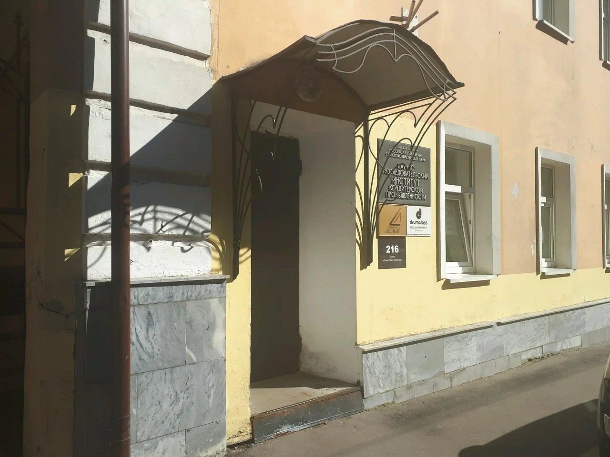
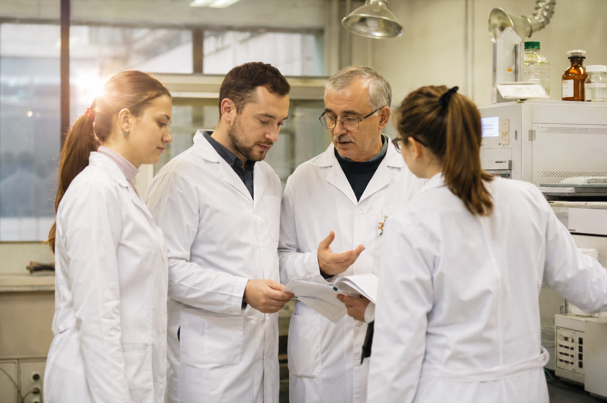
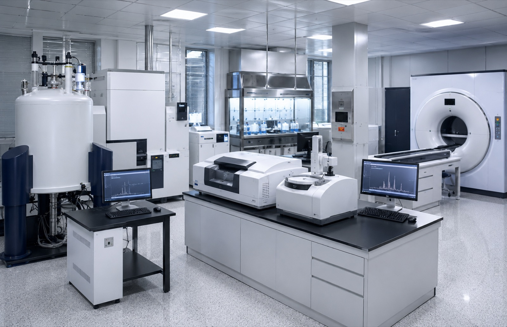

Об институте
Всероссийский научно-исследовательский институт кондитерской промышленности — филиал ФГБНУ «ФНЦ пищевых систем имени В. М. Горбатова» РАН. Более 90 лет разрабатываем фундаментальные и прикладные проблемы контроля качества сырья и готовых изделий, техники и технологии их производства.
Руководство институтаКоротко об институте
- Основан в 1932 году
- В составе ФНЦ пищевых систем им. В. М. Горбатова РАН
- Секретариат технического комитета ТК 149
- Более 500 научных работ (2008–2025)
- Москва, ул. Электрозаводская, д. 20, стр. 3
Наука на службе качества кондитерской продукции
Институт разрабатывает фундаментальные и прикладные проблемы контроля качества сырья и готовых кондитерских изделий, техники и технологии их производства. Накопленные за 90 лет компетенции подтверждены многолетней исследовательской практикой и сотнями научных публикаций.
Сегодня институт соединяет классические методы испытаний с современной приборной базой — от ЯМР и ИК-спектроскопии до неразрушающего КТ-контроля структуры изделий.
Чем мы занимаемся
- ✓ Испытания качества и безопасности кондитерских изделий
- ✓ Контроль сырья: жиры, какао, шоколад, мука
- ✓ Разработка технологий, рецептур и нормативной документации
- ✓ Стандартизация: секретариат ТК 149 «Кондитерские изделия»
- ✓ Повышение квалификации специалистов отрасли
Более 90 лет на службе отрасли
1932
Основан Всесоюзный научно-исследовательский институт кондитерской промышленности — для анализа и модернизации производства, внедрения технологий и контроля качества продукции.
XX век
Формируются научные школы, разрабатываются ГОСТы и методики испытаний; институт ведёт секретариат технического комитета отрасли.
Сегодня
Филиал ФНЦ пищевых систем им. В.М. Горбатова РАН: классические методы испытаний и современная приборная база, включая неразрушающий КТ-контроль структуры.
Команда института
Научное руководство и администрация ВНИИ кондитерской промышленности.
Белецкий Сергей Леонидович
Кандидат технических наук, доцент. Руководит институтом и развитием современных методов контроля, включая неразрушающий КТ-анализ структуры изделий.
Аксёнова Лидия Михайловна
Академик РАН, профессор, доктор технических наук. Руководитель научного направления института.
Белявская Ирина Георгиевна
Доктор технических наук, доцент.
Зайчик Борис Цалевич
Кандидат технических наук.
Абросимова Ольга Геннадьевна
Административно-хозяйственное руководство института.
ТК 149 «Кондитерские изделия»
Технический комитет по стандартизации, созданный приказом Росстандарта в 1998 году; институт ведёт его секретариат. Комитет разрабатывает программу национальной стандартизации, проводит экспертизу проектов ГОСТ, работает в межгосударственном комитете МТК 149 и актуализирует действующие стандарты отрасли.
- Председатель — Савенкова Т. В., д.т.н., президент Союза производителей пищевых ингредиентов
- Заместитель председателя — Кондратьев Н. Б., главный научный сотрудник ВНИИКП
- Секретариат — Замула В. С., ведущий инженер
Приборная база
ЯМР, ИК-спектроскопия, лазерная дифракция, микробиология и неразрушающий КТ-контроль — методы, недоступные большинству заводских лабораторий.
Обучение отрасли
Семинары и курсы повышения квалификации для технологов и специалистов по качеству с выдачей удостоверения.
Научные подразделения
Два научных отдела института. Отдел современных методов оценки качества возглавляет Осипов М. В., к.т.н.
Отдел современных методов оценки качества кондитерских изделий
Руководитель — Осипов М. В., к.т.н.
- Сектор микробиологии, гигиены и санитарии
- Лаборатория хроматографических исследований
- Лаборатория физико-химических исследований
Технологический отдел
- Лаборатория технологии производства мучных кондитерских изделий
- Лаборатория технологии производства шоколадных и сахаристых кондитерских изделий
Учёный совет
Коллегиальный орган: утверждает планы НИР, рассматривает результаты исследований и кадровые вопросы научных сотрудников. В состав Учёного совета входит 14 человек.
Наука и государственное задание
Институт выполняет государственное задание в составе ФНЦ пищевых систем им. В.М. Горбатова РАН — фундаментальные и прикладные исследования в кондитерской отрасли.
Документы →Институт в лицах и приборах
Место для реальных фотографий — здание на Электрозаводской, сотрудники, приборная база (JPG, 4:3).



Нужна экспертиза или испытание?
Опишите задачу — подберём методику, дадим срок и стоимость в течение рабочего дня.
Оставить заявку